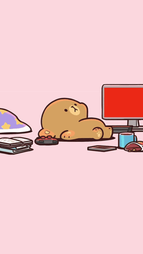
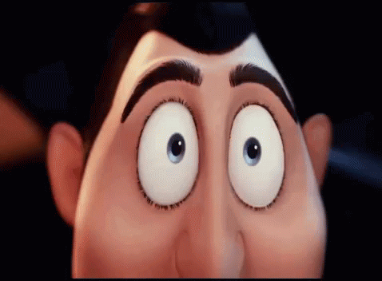
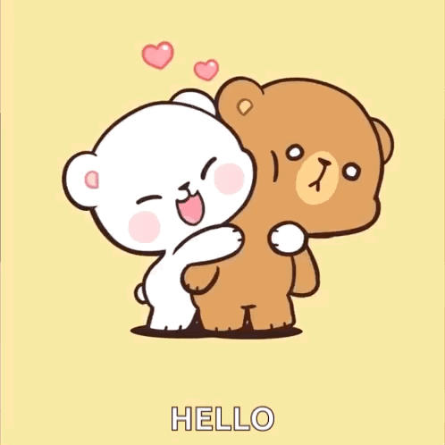
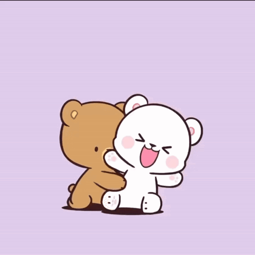
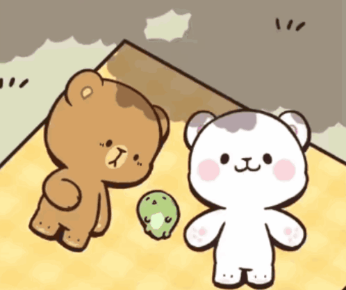
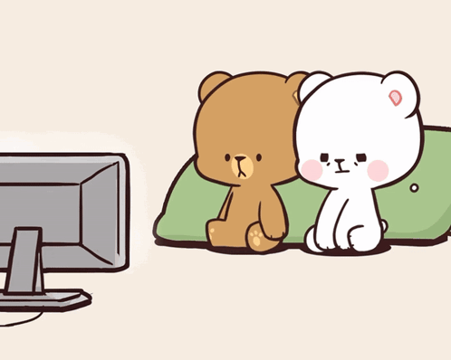

Para: Jazmín Abril ♥
Hola hermosa! Mediante esta carta quiero decirte algunos datos interesantes.






Como ya sabes me cuesta expresarme bien, no hablo mucho porque me aterra decir algo inapropiado, pero esta forma lo hace más fácil.
El primer día que llegue y subí por un cacho de rosca, fué la primera vez que te conocí y en mi mente solo pasaban palabras como: Es muy bonita, quien es ella, quiero conocerla. Y después de estar ausente casi tres semanas, al regresar y verte de nuevo, reafirme las palabras anteriores.
Además, de todos los peinados que te he visto, mi favorito es el de cabello suelto y aunque a veces digas que se te esponja mucho, a mi me parece muy lindo.
Ayer te veías espectacular con ese outfit y de seguro hoy tambien estas divina c:
Recuerdo que piensas que no quiero abrazarte cuando te saludo. Pero curiosamente, tus abrazos me parecen cálidos. Quiero decir, que me gusta abrazarte.
Así mismo, tú forma de caminar pienso que es linda (hasta pensé que eras un poco fresa jaja), me di cuenta de que cuando estas bromeando levantas una ceja y haces una mini mueca, cuando platicas algo que ver con alguna decisión volteas la mirada hacia arriba y terminas con una mueca de disgusto.
Con lo que vi durante mi estadia, pienso que eres una personita lo bastante increible y admirable para llegar aún más lejos de lo que ya esta. Que no te debe afectar cuando te traten de una manera diminutiva porque solo quieren apagar tú brillo, si te lo propones puedes hacer muchas cosas!
Para ser honesto, estoy interesado en conocerte más, dan ganas de molestarte unos ratitos (sin que me golpees obvio jaja), hacerte reir, a veces ponerte roja como tomatito.
Me gustaría pasar tiempo y salir contigo a varios lugares. Solo imagina ir al parque, encontrar una ardilla y que nos persiga sin cansancio por la comida. Subir a los carritos chocones y en el momento en que te choque me persigas a muerte por venganza. Ir por un helado y que por azares del destino a alguno de los dos se le caiga. O simplemente platicar hasta perder la noción del tiempo.
Comprar boletos de cine y cuando lleguemos darnos cuenta de que eran para otra ciudad pero comiendo palomitas. Ver en casa diferentes géneros de películas pero que estén buenas. Tomar hasta el amanecer de vez en cuando, ir a comer sin que te robes mis papitas porque son sagradas.
Si hubiera una oportunidad y también de que una señorita no me abandone como lo del café, entonces no tendría problema de hacerlo.